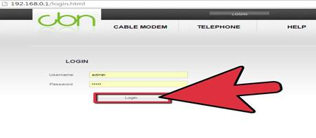
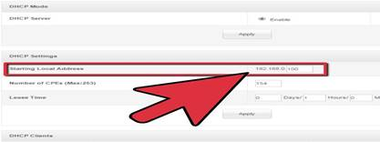
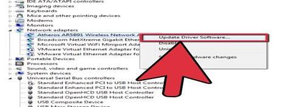

How to Create a Wireless Network
Computer networking is a great way to collaborate with other computer users in your home or office. While it is becoming increasingly easy for the basic computer user, it can still be a difficult, frustrating experience for many people.
Method 1 Setting up Network
1. Get a router. To create wireless network you need a wireless router or wireless access point.
· If you have broadband connection with DSL modem simply connect the WAN port of new wireless router to the LAN port of wireless router.
· To configure new wireless router connect the network cable with your PC and new wireless router.

a. Open the web browser in the PC and type the default IP address of the router.Usually it is 192.168.0.1 Enter the user name and password (default user name is "admin" and default password is also "admin").
2. Configure the WAN port. Go to WAN Settings and chose the DHCP mode.
3. Go to LAN Settings and change IP address of the router. Do this if you have same IP address with DSL modem. For example, if your DSL modem IP address is 192.168.0.1, change the wireless router IP address to 192.168.1.1 and give the default subnet mask 255.255.255.0.

4. Configure the DHCP server of the wireless router. Give IP addresses a start range and an end range.
5. Configure wireless SSID. Change the default primary SSID and broadcast SSID to secure the wireless router. Choose the security mode and WPA algorithm, and enter the key to the router.
6. Change the security mode to Mixed WPA/WPA2-PSK. Change the WPA Algorithms settings to TKIP&AES. You can also configure the wireless key.
Method 2 Detecting your Wireless Adapter
1. Note the manufacturer and model of your wireless adapter.
2. Plug it into your PC.
3. Find the drivers. If your operating system does not recognise the wireless adapter, get drivers from any discs that came with the adapter. Or, failing that, download them from the Internet.

4. Install the drivers. In Windows XP, either right click on the .inf file and click install, or enter Device Manager and Update Drivers on the Unknown Device.
· Once Windows XP recognizes your wireless device it should appear in Network Connections and offer you a choice of routers to connect to within range.
Method 3 Connecting to a Network

1. Choose your router (usually the manufacturer name aka SSID), the security method and enter the passkey in order to connect to it. Use Auto DHCP, unless otherwise instructed.
2. This should find the wireless router (click refresh until it does) and connect to the network through the new router.